오늘 완성할 것: 소리가 나는 8쪽 그림책
앞·뒤표지는 AI 나레이션, 본문은 배경음악. 책장을 넘기면 소리가 바뀌는 플립북을 출간합니다.
소리 지도 미리 보기
작업 순서
소리 지도
| 쪽 | 소리 | 파일 |
|---|---|---|
| 1 앞표지 | 제목 나레이션 | 01_제목.mp3 |
| 2~7 본문 | 배경음악 (반복) | 02_배경.mp3 |
| 8 뒷표지 | 맺음 나레이션 | 08_맺음.mp3 |
준비물시작 전에 확인
- 미리캔버스에 완성한 8쪽 그림책
- 구글 계정 (AI 스튜디오·헤이진 로그인)
- 교과목 A에서 쓴 원고 (제목, 이야기 요약)
미리캔버스 완성본 → 웹용 PDF
플립북에 올릴 PDF를 받습니다. 쪽 수와 순서가 소리 지도와 맞아야 합니다.
순서
- 그림책 디자인 열기 → 페이지 목록에서 8쪽인지 확인
- 1쪽을 먼저 선택한 뒤 슬라이드쇼 (선택한 쪽부터 시작) → 순서·오타·빠진 글자 확인
- 다운로드 → PDF(웹용) → 페이지가 모든 페이지(1~8)인지 확인
- 파일 이름을
책제목_플립북.pdf로 바꿔 두기
라이선스미리캔버스로 출간해도 되나요?
네. 라이선스 계약 제7조 10호가 전자책·인쇄 출판물의 표지와 내지 디자인을 허용합니다.
- 편집은 반드시 미리캔버스 에디터 안에서
- 디자인 요소를 잘라내 다른 프로그램에서 쓰지 않기 (제9조 10호)
- 작업 파일은 지우지 말고 보관 (제13조 8호)
설정왜 8쪽인가요?
헤이진 Book 효과는 1쪽을 홀로, 그다음은 2·3 / 4·5 / 6·7 펼침면으로 보여 줍니다. 8쪽이면 뒷표지가 마지막에 홀로 섭니다.
7쪽(앞표지·캐릭터 소개·기·승·전·결·뒷표지)이면 뒷표지가 6쪽 옆에 붙어 버리므로, 뒷표지 앞에 판권면 1쪽을 넣어 8쪽으로 맞춥니다.
막힐 때PDF가 안 받아져요
인쇄용 PDF가 오래 걸리거나 실패하면, 플립북용은 웹용 PDF로 충분합니다.
한 걸음 더파일을 두 갈래로 관리
종이책(POD) 원고는 인쇄용 PDF로 따로 받아 두고, 플립북은 웹용 PDF로 나눠 관리합니다. STEP 7에서 종이책 뒷표지에 QR을 넣을 때 인쇄용을 다시 씁니다.
나레이션 원고 두 줄 쓰기
TTS에 넣을 문장은 앞표지 한 줄, 뒷표지 한 줄뿐입니다.
문장 예시
| 쪽 | 문장 |
|---|---|
| 1 앞표지 | 토끼와 거북이. … 느려도 괜찮아. |
| 8 뒷표지 | 느려도 괜찮아. 끝까지 가는 게 중요하니까. 글과 그림, ○○○. |
맺음말 3안 받기 (지피티 프로젝트 또는 제미나이)
한 걸음 더귀로 고르기
3안을 STEP 3에서 실제로 들어 보고 고릅니다. 글로 읽기 좋은 문장과 소리로 듣기 좋은 문장은 다릅니다.
구글 AI 스튜디오로 나레이션 만들기
Gemini 3.8 Flash TTS로 제목·맺음 나레이션을 같은 목소리로 만들고 WAV로 받습니다.
① 접속하고 Playground 열기
- aistudio.google.com → Get started → 구글 로그인
- 왼쪽 EXPLORE › Playground
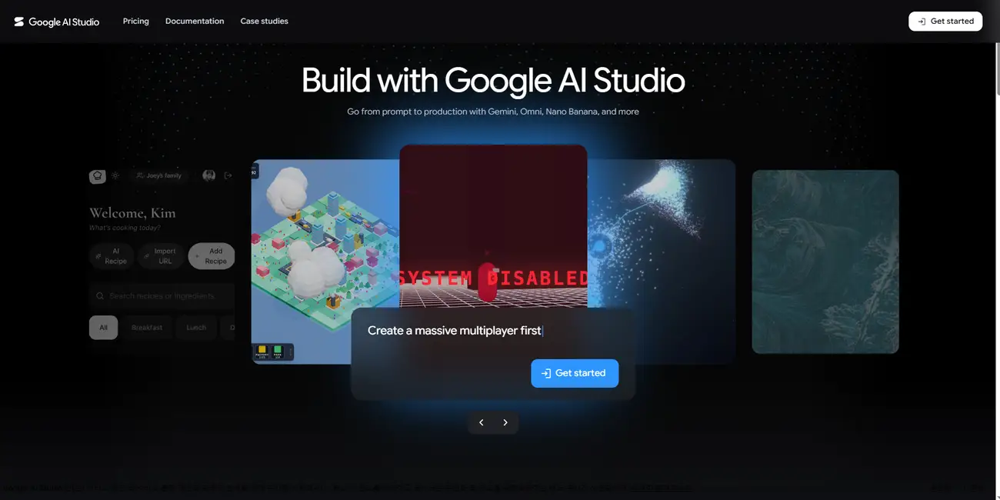
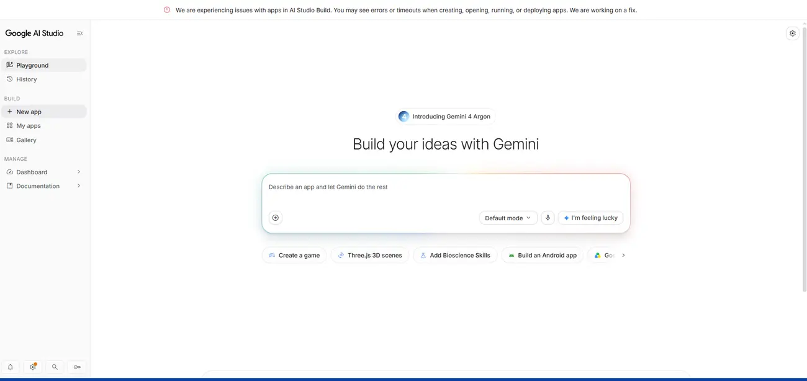
② TTS 모델 고르기
- 오른쪽 Run settings의 모델 이름 클릭
- Model selection → Audio 탭 → Gemini 3.8 Flash TTS
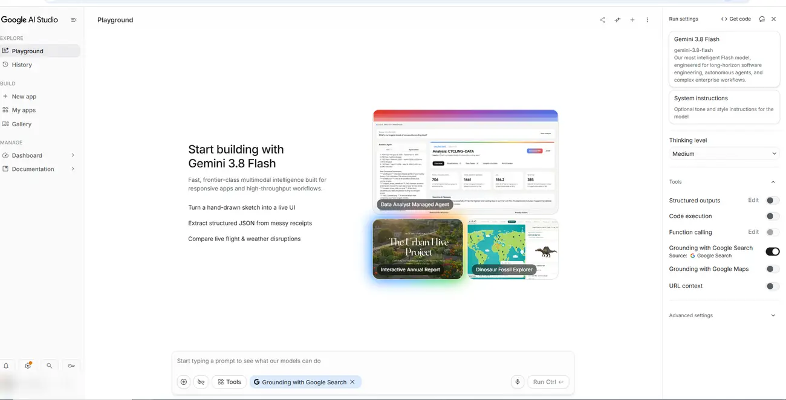
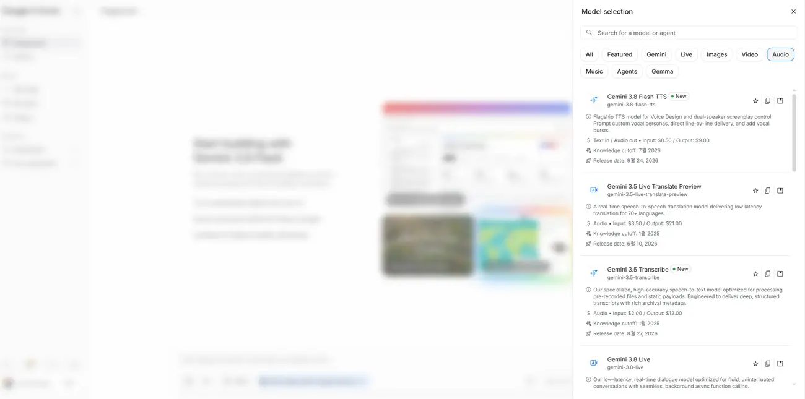
③ 새 대화 만들기
Turn text into natural-sounding speech 화면에서 Create new dialog를 누릅니다.
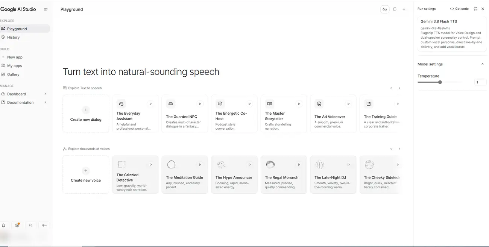
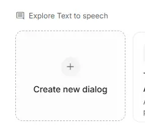
④ 목소리 고르기
- Speaker 1 클릭 → Speaker settings
- Language 필터를 한국어로, Gender·Pitch·Style·Use case로 좁히기
- ▶로 들어 보고 결정 → 목소리 이름을 메모
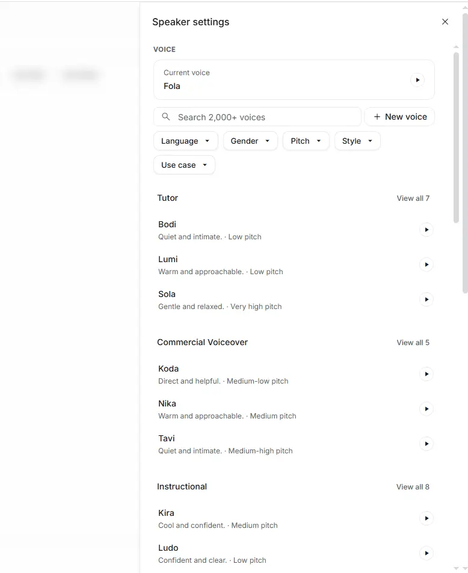
⑤ Style 정하고 문장 넣기
Style에서 Whisper·Friendly·Narration·Promote 중 고르거나, 위 칸에 직접 묘사합니다.
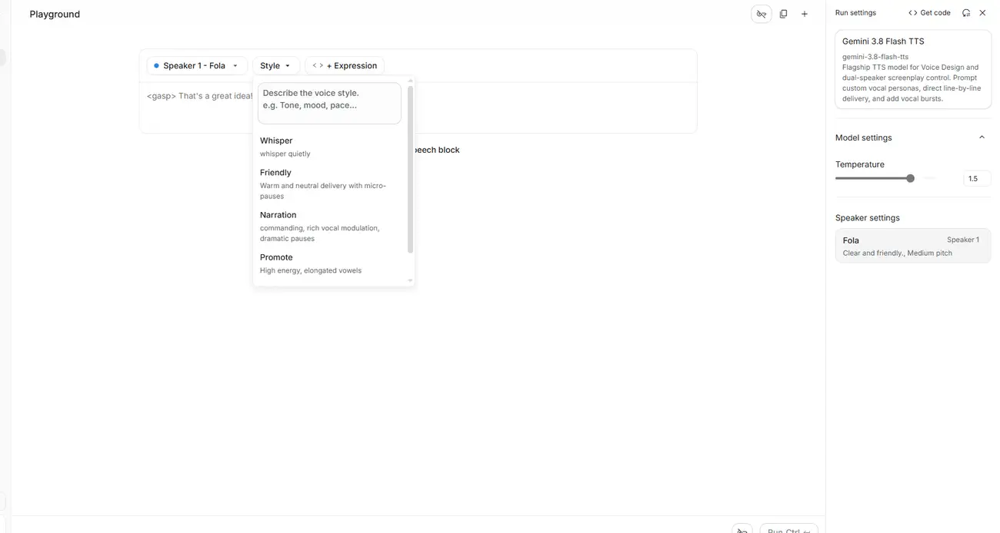
⑥ Temperature → Run → WAV 저장
- Model settings › Temperature 1.5: 높일수록 표현이 풍부, 낮출수록 안정
- Run → 들어 보고 다운로드 →
01_제목.wav - 같은 목소리로 맺음 문장 →
08_맺음.wav
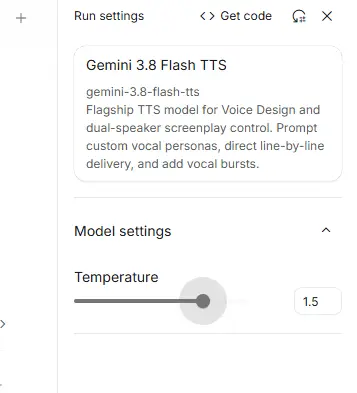
한 걸음 더표현 태그와 두 목소리
- + Expression:
<gasp><laugh>breath, chuckle 같은 태그로 숨소리·웃음 넣기. 태그가 영어라 한국어 문장에서 자연스러운지 꼭 들어 보기 - + Add speech block과 Speaker 2로 두 목소리 대화 만들기 (한 대화에 화자 2명까지)
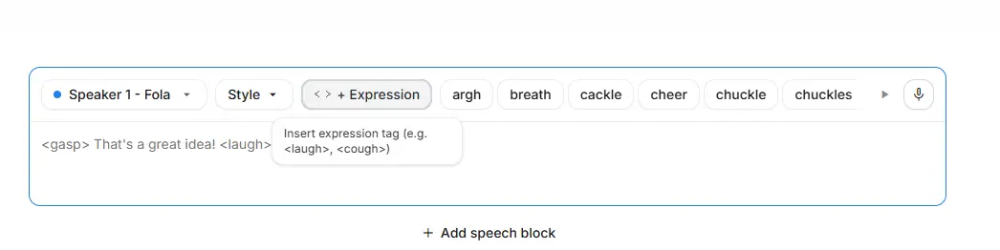
막힐 때목소리가 이상해요
- 영어 억양이 나오면 Language 필터를 한국어로 바꿔 다시 고르기
- 같은 문장인데 매번 느낌이 다르면 Temperature를 1로 낮추기
- 앞·뒤표지 목소리가 달라졌다면 메모한 목소리 이름으로 다시 선택
Convertio로 WAV → MP3
WAV는 용량이 커서 플립북이 늦게 열립니다. MP3로 바꿔 가볍게 만듭니다.
순서
- 구글에서 convertio 검색 → Convertio — File Converter 또는 Online Audio Converter
- 위 메뉴 변환 → 오디오 변환기
- 파일 선택 →
01_제목.wav,08_맺음.wav두 개 함께 올리기 - 출력 형식 MP3 → 변환 → 다운로드
- 파일 이름
01_제목.mp3,08_맺음.mp3로 정리
화면
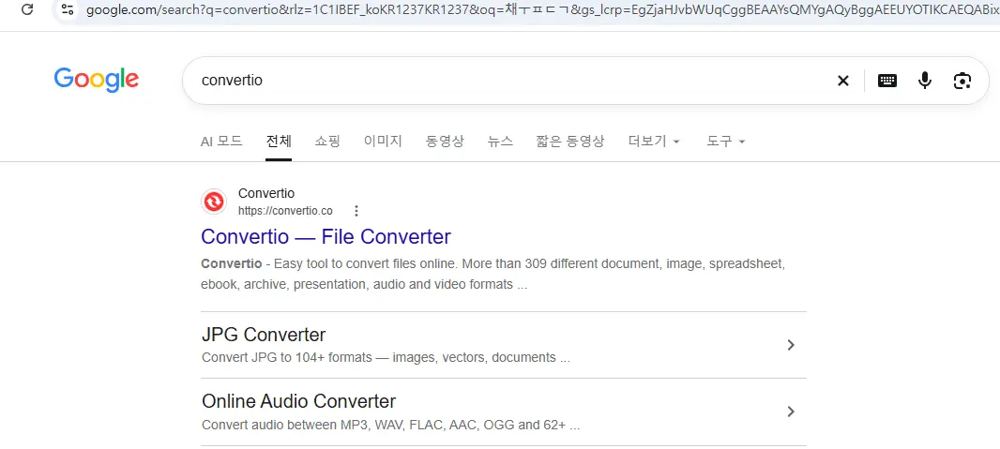
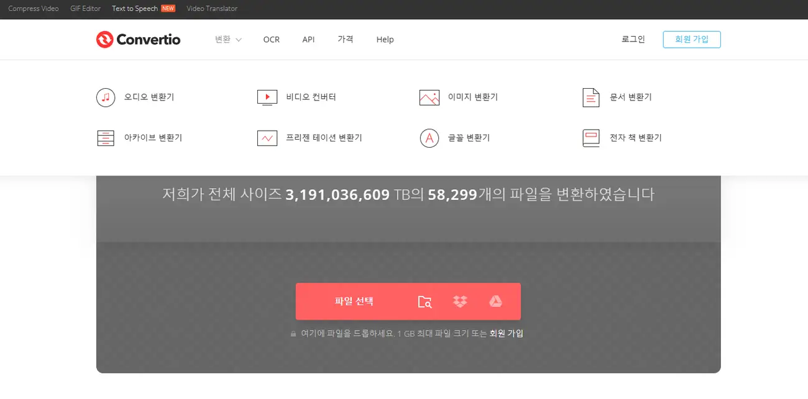
막힐 때변환이 막혀요
무료 변환 횟수 제한에 걸리면 강사가 안내하는 다른 변환 사이트를 씁니다. 파일 이름 규칙은 그대로 지킵니다.
Pixabay 배경음악 받기 (2~7쪽)
본문에 깔릴 배경음악 한 곡을 고릅니다. Pixabay 음원은 MP3로 받아져 변환이 필요 없습니다.
순서
- pixabay.com → 상단 음악(Music)
- 검색어:
children storylullabyfairy talemusic boxacoustic gentle - 미리 듣기 → 이야기 분위기에 맞는 곡 → 다운로드 (로그인을 요구할 수 있음)
- 파일 이름
02_배경.mp3
라이선스Pixabay 음원, 출간에 써도 되나요?
네. Pixabay 콘텐츠 라이선스 요약(2026.10.23 확인) 기준입니다.
- 무료 사용, 출처 표기 의무 없음
- 새 작품에 넣어 쓰기 가능 → 그림책 플립북 배경음악 OK
- 금지: 음원을 그대로 단독으로 판매·배포, 상표·브랜드명으로 사용, 오해를 부르는 사용
- 제3자 권리 확인 책임은 사용자에게 있음
한 걸음 더구간마다 다른 음악
기·승·전·결 구간에 곡을 따로 넣습니다. 예) 2~3쪽 경쾌하게 / 4~5쪽 느긋하게 / 6~7쪽 긴장감 있게.
판권면에 "배경음악: Pixabay ○○○(작곡자)"를 적어 두면 출처 관리가 깔끔합니다.
헤이진 플립북 + 쪽별 Background Audio
PDF를 올려 Book 효과를 주고, 쪽마다 소리를 지정합니다.
① 업로드하고 Editor 열기
- heyzine.com 로그인 → STEP 1의 PDF 업로드 → 제목 입력
- 대시보드 카드 메뉴 → Editor
- 왼쪽 STYLE › Page Effect → Book
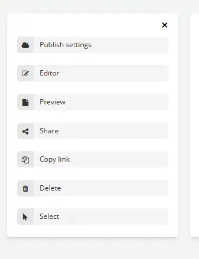
② Background Audio
- 왼쪽 STYLE › Background Audio
- Library 탭: MP3 세 개 올리기
- Flipbook audio 탭: Audio 목록에서 파일 → Add → Start / End → Options(▾)
- Close → 위쪽 Save
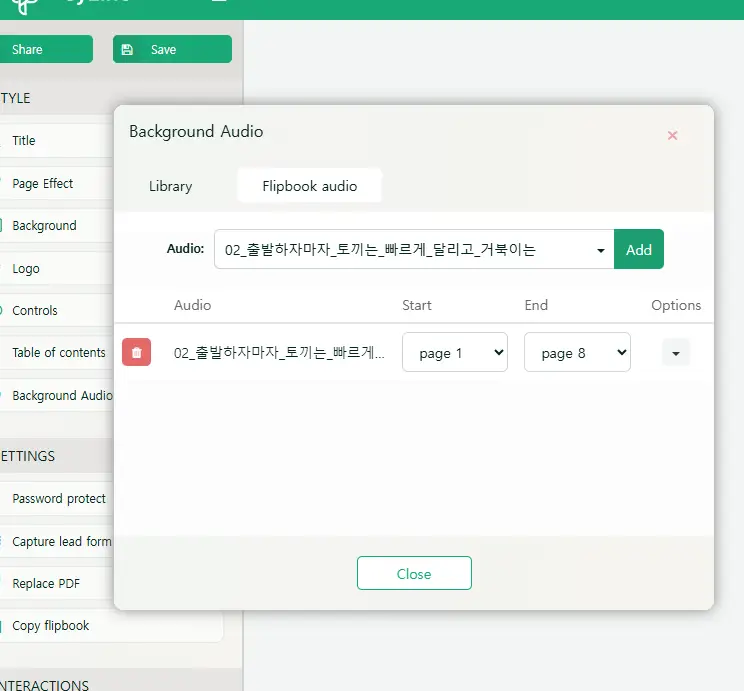
세 줄로 넣기
| Audio | Start | End | Options |
|---|---|---|---|
| 01_제목 | page 1 | page 1 | 반복 끄기 |
| 02_배경 | page 2 | page 7 | 반복 켜기, 볼륨 낮게 |
| 08_맺음 | page 8 | page 8 | 반복 끄기 |
막힐 때소리가 안 나요
- Save를 눌렀는지 확인 (Close만 누르면 반영이 안 될 수 있음)
- 처음 열 때 소리가 없으면 화면을 한 번 클릭·터치. 브라우저가 사용자 동작 전 자동 재생을 막습니다
- 파일이 목록에 없으면 Library 탭에 올라갔는지 확인
- 헤이진은 한국어 메뉴가 없습니다. 크롬 번역을 켜면 버튼 이름이 바뀌니, 교안의 영어 메뉴 이름과 같이 보며 찾습니다
한 걸음 더확인은 Preview로
카드 메뉴 Preview로 1쪽부터 끝까지 넘기며, 쪽이 바뀔 때 소리가 정확히 바뀌는지 확인합니다. 배경음악이 나레이션보다 크면 Options에서 볼륨을 낮춥니다.
공유·제출과 출간 마무리
링크와 QR로 공유하고 패들렛에 제출합니다.
순서
- 카드 메뉴 Share → Link 복사, QR code 다운로드
- 패들렛 「생성형AI 일러스트 전자책 POD 디지털 출판 편집 실무」 본인 섹션에 링크 + QR 이미지 올리기
- 휴대폰으로 QR을 찍어 소리까지 나오는지 최종 확인
한 걸음 더종이책과 전자책 연결
방금 받은 QR을 미리캔버스 뒷표지에 넣어 POD 인쇄용 PDF를 다시 받습니다. 종이책 독자는 뒷표지 QR로 소리 나는 전자책을 엽니다. 플립북 자체는 QR 없는 버전이어도 괜찮습니다.
알아 둘 제한헤이진 무료 플랜
- 플립북 5권까지 (삭제하면 휴지통을 거쳐 완전 삭제)
- Replace PDF(링크 유지한 채 PDF 교체)는 유료
- 로그인 없이 만든 플립북은 1주 뒤 삭제 → 반드시 로그인 후 작업
- 여러 계정으로 5권 제한을 피하는 방법은 약관 위반이라 쓰지 않습니다